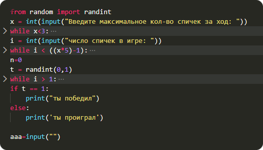

Это сайт посвящен языку программирования Python.
Здесь вы можете узнать о истории Python,
а так же увидеть готовые работы.
Задумка по реализации языка появилась в конце 1980-х годов,
а разработка его реализации началась в 1989 году Гвидо ван Россумом.
Для распределённой операционной системы Amoeba
требовался расширяемый скриптовый язык,
и Гвидо начал разрабатывать Python на досуге,
позаимствовав некоторые наработки для языка ABC.
С самого начала Python проектировался как объектно-ориентированный язык.
Гвидо ван Россум назвал язык в честь популярного британского комедийного
телешоу 1970-х «Летающий цирк Монти Пайтона»,
поскольку автор был поклонником этого телешоу,
как и многие другие разработчики того времени,
а в самом шоу прослеживалась некая параллель с миром компьютерной техники.
Наличие дружелюбного, отзывчивого сообщества пользователей считается,
наряду с дизайнерской интуицией Гвидо, одним из факторов успеха Python.
Источник: Wiki

Это было домашнее задание,
а еще я "пдпдпмщклпщплппш, аладмбамлплпт и
наганаееаеаьаьаьеьаьъаьвыьыьыьыыыы" - ©Ryan
они должны быть здесь,
но Влад не сделал свою часть.